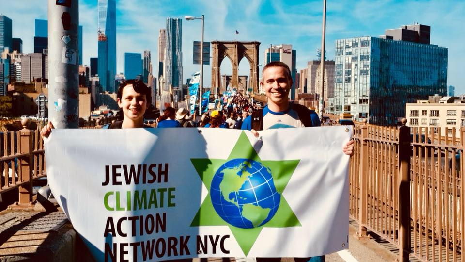

The Jewish Climate Action Network chapter in NYC (JCAN-NYC) is a network of Jews who stand up for action on climate change.
We stand upon the teachings, traditions, and prophetic voices of Judaism that compel us to protect all of our sacred Creation. We do this through advocacy and activism, and through sustainable practices that protect the Earth and its inhabitants.
We have built a network of partnerships and relationships with Jewish and other environmental and justice leaders.
